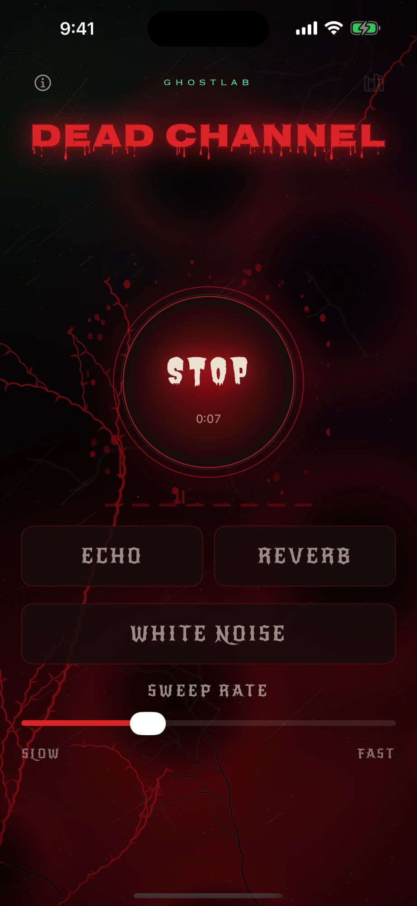
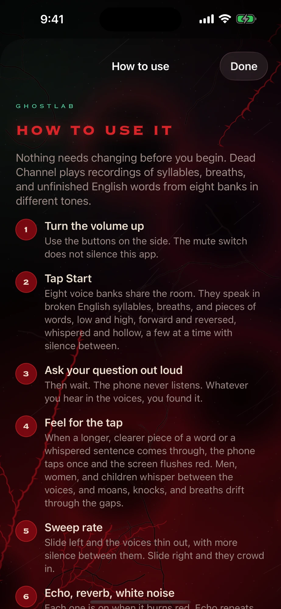
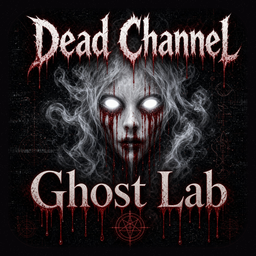

Ask, then leave room
Ask one short question in your normal voice, then give it half a minute before the next. The phone never listens, so there is no need to speak to it. Talk to the room.
GhostLab
Ask your question. Listen for the whisper.
GhostLab: Dead Channel is a spirit box built from eight banks of broken voices. Ask a question out loud, listen for the words and whispers that come through, and feel the phone tap when a clear one slips out. Every session is saved so the team can go back over it after the hunt.
48 hours free, then $7.99 once. No subscription. No ads.

Tap Start and the banks begin: broken syllables, breaths and pieces of English words, deep men and high women, forward and backwards, a few at a time with silence in between. Far off, somewhere down a tunnel, someone whispers.

When a longer, clearer piece of a word or a whispered sentence comes through, the phone taps once and the screen flushes red. You can keep your eyes on the room and still know when to listen hard.
Dead Channel works like the spirit box sessions you already run. Ask, wait, listen, and log what comes through, then go back over the recording with the team once the night is done.
Ask one short question in your normal voice, then give it half a minute before the next. The phone never listens, so there is no need to speak to it. Talk to the room.
When the phone taps and the screen flushes red, read the session clock out loud. Everyone on the team gets the same time to write beside what they heard.
Each person notes the word they heard before anyone says it aloud. A word three people wrote down on their own carries more weight than one the whole room agreed on after hearing it suggested.
The saved session holds what Dead Channel played, and nothing from the room. Run a voice recorder or a second phone beside it so your questions and the responses sit on one timeline.
Log each tap next to your EMF readings, temperature and camera notes. A clear word in the same minute as a spike or a cold spot earns a closer look when you review.
Every voice is a recorded clip chosen at random, and the phone never hears your question. Knowing that is what lets you judge a response honestly, and decide for yourself what it meant.
The same routine the app teaches on its How to use screen. Nothing needs changing before you begin.
Use the buttons on the side. The mute switch does not silence Dead Channel, and the voices begin as soon as you tap Start.
Ask your question, then wait. The voices come a few at a time with silence between them.
A clearer word or a whispered sentence taps the phone once and flushes the screen red. Note the time.
Tap Stop. The session is saved with every effect you had on, ready in the Library.
iPhone and iPad on iOS 17 or later, and Android phones on Android 8 or later. It works offline, so a basement with no signal is fine.
The app never asks for the microphone. There is no account, no ads and no analytics, and your sessions stay on your phone. Privacy policy
Every bank, whisper and effect is open for 48 hours from the moment you start the trial. Then $7.99 once, for life, with no subscription. Saved sessions keep playing either way.

GhostLab: Dead Channel is on the App Store for iPhone and iPad and on Google Play for Android. It runs on its own, next to GhostLab: Paranormal Toolkit or any other kit you carry.
Reading this on a computer? Point your phone camera at a code and the store opens.